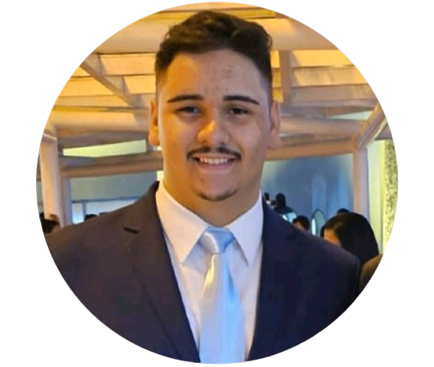

Phillipe Lima
Desenvolvedor Jr.
LinkedIn - Phillipe Lima
Email: phillipelimapravatti@gmail.com
Celular: (11) 94595-7447
Data de nascimento: 17/05/2006
Localização: São Paulo - SP
Sobre mim:
Sou um jovem que ama tecnologia. Essa paixão começou no ano de 2022, ano de início de um curso proporcionado pelo Colégio Visconde de Porto Seguro em parceria com o Bank of America. Curso este que além de aprender programação apendemos sobre matemática financeira e Inglês para negócios.
Minha vida acadêmica começou no Colégio Visconde de Porto Seguro no ano de 2012 e terminou no ano de 2023 com minha formatura do Ensino Médio. No Porto obtive muitas oportunidades de evoluir tanto acadêmicamente, quanto como pessoa. No ano de 2024, comecei a cursar Análise e Desenvolvimento de Sistemas no Centro Universitário Católico Ítalo Brasileiro.
Ainda em minha vida acadêmica, no ano de 2023 conclui um curso de Inglês no CNA. Com o foco no inglês, tive a oportunidade ofericida pelo Porto de fazer o cambridge, certificado A2 com B1 em "Writting".
No curso "Escola de Negócios", especificamente nas aulas de tecnologia, aprendi algumas liguagens de programação como: Python, HTML, CSS e JavaScript. Além de aprender um pouco sobre banco de dados. Esse conhecimento em programação, desde então, só cresceu e no início do ano de 2024 comecei a aprender a linguagem de programação Java.
Currículo